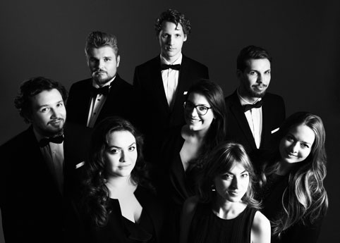

O mnie

Cześć!
Mam na imię Kacper i na co dzień zajmuję się muzyką. Głównie jest to pedagogika fortepianowa i wokalna, ale również wykonawstwo. Ukończyłem Uniwersytet Muzyczny Fryderyka Chopina w Warszawie, z wykształcenia jestem dyrygentem. Przedtem uzyskałem tytuł inżyniera na wydziale mechanicznym, a zamiłowanie do techniki było mi zawsze bliskie. Na pewno ma to jakiś wpływ na naukę frontendu!
Repertuar
Poniżej przykładowy repertuar, nad którym obecnie pracuję – żeby nie wypaść z formy.
| Nr | Tytuł utworu | Kompozytor |
|---|---|---|
| 1 | Małe preludium C-dur, BWV 933 | J.S. Bach |
| 2 | Małe preludium c-moll, BWV 934 | |
| 3 | Rondo a capriccio op. 129 | Ludwig van Beethoven |
| 4 | Impromptu Ges-dur op. 90/3 | Franz Schubert |
| 5 | Preludium g-moll op. 23/5 | Sergei Rachmaninoff |
| 6 | L'Alouette (The Lark) | Glinka-Balakirev |
| przerwa - 15 min | ||
| 7 | Sonate Melancolique op. 49 | Ignaz Moscheles |
| 8 | Etiuda koncertowa op. 111/4 | |
| 9 | Ich ruf zu dir, BWV 639 | Bach-Busoni |
Repertuar przykładowego koncertu w postaci 📜 listy uporządkowanej:
- Małe preludium C-dur, BWV 933 – J.S. Bach
- Małe preludium c-moll, BWV 934 – J.S. Bach
- Rondo a capriccio op. 129 – Ludwig van Beethoven
- Impromptu Ges-dur op. 90/3 – Franz Schubert
- Preludium g-moll op. 23/5 – Sergei Rachmaninoff
- L'Alouette (The Lark) – Glinka-Balakirev
przerwa - 15 min
- Sonate Melancolique op. 49 – Ignaz Moscheles
- Etiuda koncertowa op. 111/4 – Ignaz Moscheles
- Ich ruf zu dir, BWV 639 – Bach-Busoni
Skróty i symbole pojawiające się w repertuarze, przedstawione za pomocą krótkiej listy nieuporządkowanej:
- op. – opus (łac. dzieło) – przykładowo op. 90/3 oznacza: dzieło dziewięćdziesiąte, a w nim trzeci utwór
- BWV – Bach Werke Verzeichnis – kompletny katalog dzieł Jana Sebastiana Bacha stworzony przez Wolfganga Schmiedera
Pedagogika fortepianowa
Nauczaniem gry na fortepianie 🎹 zajmuję się od 6 lat. Lubię uczyć zarówno dzieci, jak i dorosłych (nawet tych, którym wydaje się, że słoń im nadepnął na ucho). Nie można, a nawet nie wolno tak mówić!
IMO:
skąd ktoś ma wiedzieć i określić czy się do czegoś nadaje, jeśli nie ma do takiej oceny kompetencji?
Zazwyczaj jest tak, że 99% osób nawet nie spróbowało…
Najciekawszym dla mnie wyzwaniem, a zarazem najtrudniejszym, jest nauczanie dzieci. W dzisiejszych czasach jest tak trudno o ich uwagę, a kluczową kwestią są rodzice i ich kontakt z dzieciakami. Wszystko zależy również od tego czy dziecko samo chciało rozpocząć przygodę z instrumentem, czy raczej jest to ambicja rodziców.
Rodzice przecież lekko nie mają, pracują, starają się i na pewno nie chcą źle. Ich pomoc jest nieoceniona, a podczas wspólnych dyskusji można wybadać charakter i potrzeby małego człowieka. Pomyślmy: czy nauczyciel muzyki ma szansę w rywalizacji z iPadem, na którym jest zainstalowany Minecraft? Na szczęście sam grywam w gry komputerowe, 🎮 znam sporo tytułów a propozycja nauczenia się ulubionego tematu z gry komputerowej jest sytuacją win-win.
Poniżej dwa krótkie filmy:
Etiuda w wykonaniu jednego z moich uczniów – typowa lekcja
Fragment mojego grania – na pewno znasz ten utwór!
To jest fragment Fantaisie-Impromptu cis-moll op. 66 Fryderyka Chopina
"…przecie mówię, że to moje Fantaisie-Impromptu cis-moll op. 66!!!" – Fryderyk Chopin
Śpiew i nie tylko
Śpiewem zainteresowałem się dosyć późno... W szkole muzycznej II stopnia chodziłem z kumplem na wagary za każdym razem, kiedy na zajęciach z kształcenia słuchu pani zapowiadała solfeż (czytanie nut głosem). Potem dowiedzieliśmy się, że jest coś takiego jak chór obowiązkowy! Prawie wyrzucili nas ze szkoły…
Co oprócz śpiewania?
Wybór studiów po szkole muzycznej nie był łatwy. Ostatecznie zdecydowałem się na dyrygenturę chóralną, jako że była to zupełnie nowa materia. Wtedy głęboko to rozważałem a dziś jestem przekonany, że to był najlepszy możliwy wybór związany z moją edukacją muzyczną. Sztuka dyrygowania pozwoliła mi rozwinąć przede wszystkim kompetencje związane z poczuciem czasu, a co za tym idzie – kreowaniem muzycznej formy. Poza tym bardzo lubię pracować z ludźmi.
Dyrygowanie chórem jest bardzo ciekawym i pięknym zajęciem, ale chcąc nie chcąc, na koncertach "stoi się" tyłem do publiczności. Cenię mimo wszystko kontakt z ludźmi face to face – jest to zwyczajnie bezpośrednie.
Jak zatem mieć ciastko i zjeść ciastko?
W zespole wokalnym można jednocześnie współtworzyć harmonię oraz "stać" przodem do publiczności. Jeszcze w szkole muzycznej współtworzyłem mały zespół wraz z kilkoma kolegami. W trakcie studiów zainicjowałem powstanie zespołu Vocore.
Stronę postawiłem na WordPressie i to były początki mojej przygody z frontendem – pierwszy projekt, wynikający z potrzeby.
Vocore, fot. Karpati&Zarewicz
Kontakt
Jeśli chcesz się ze mną skontaktować, napisz na #slacku, albo na maila: forteklapianista@gmail.com